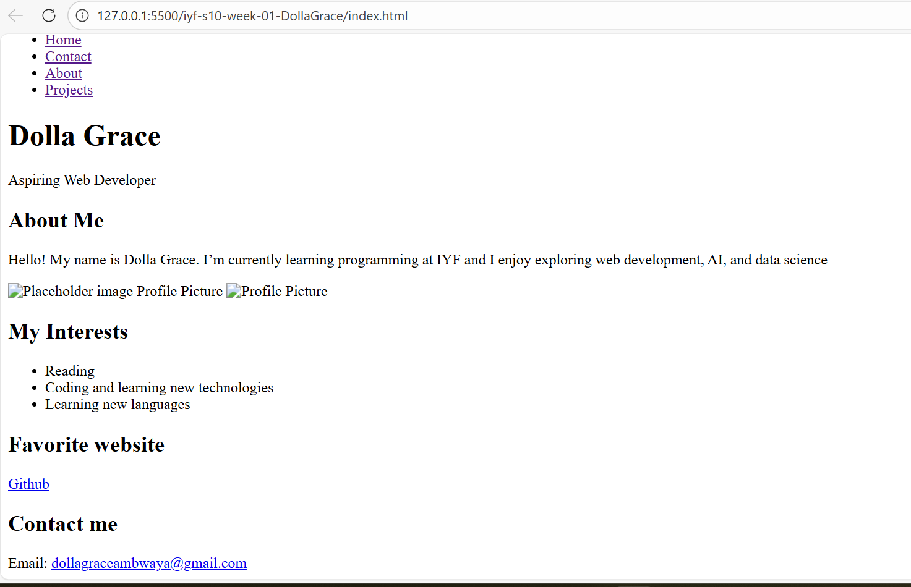
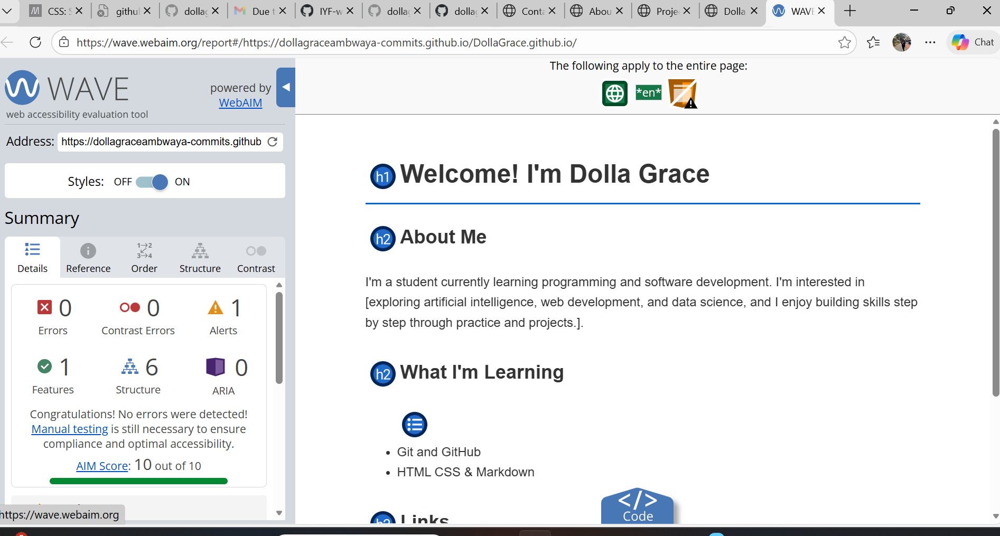
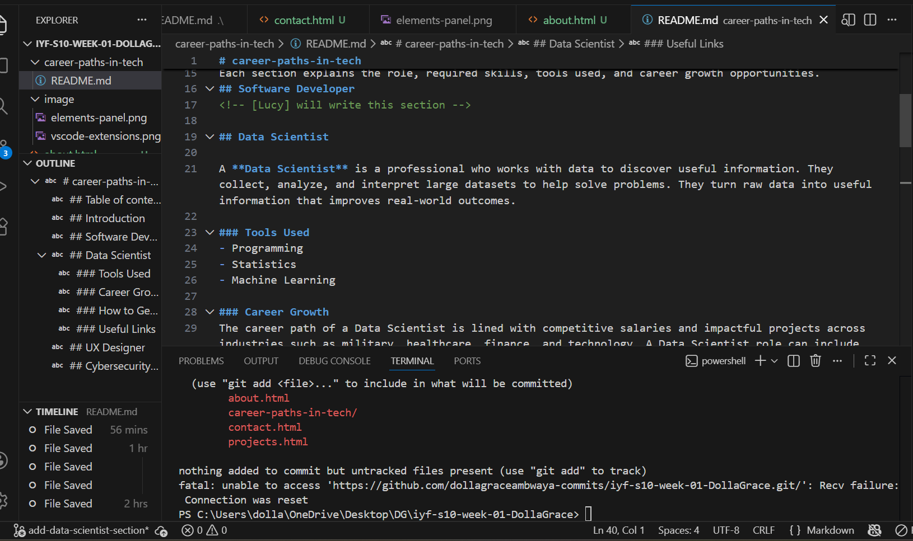

Project 1: Personal Portfolio
This project is my first personal portfolio site, built with HTML and CSS. It demonstrates my ability to structure pages, create navigation, and apply accessibility best practices.
Project 2: Accessibility Audit
In this project, I ran Lighthouse and WAVE audits on my site, documented issues, and applied fixes. The final score reached 100/100 for accessibility.
Project 3: Team Collaboration
As part of a group repository, I contributed to the "Career Paths in Tech" project. I wrote and polished the Data Scientist section, practicing Git workflow and professional documentation.